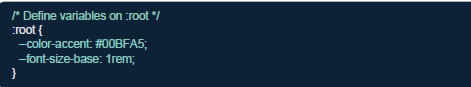

CONCEPT
Build a full blog post reading page,it has a hero image banner with the title and author byline overlaid on it, a two column layout (main article + sidebar), a styled code block, a blockquote, a tag chip row, and related articles
SKILLS TESTED
CSS Grid (2-col)
semantic HTML5
Custom Properties
Typography scales
Blockquote Styling
Responsive layout
Overflow & Clamp
Position / z-index
Box Model Mastery
WHAT MAKES IT TRICKY
The two-column layout must be built with CSS Grid using named areas or fr units. The hero banner needs position: relative + an absolutely positioned text overlay.
Typography must follow a consistent scale using clamp() or em-based sizing. The sidebar becomes full-width below a breakpoint using a single media query--.this is where responsive thinking is truly tested.
VISUAL REFERENCE MOCKUP
devjournal.io/posts/css-custom-properties
The Dev journal
CSS
Mastering CSS Custom Properties
A practical guide to design tokens and theming
S
Sara Oduya
May 18, 2025
8 min read
Introduction
CSS custom properties, also known as CSS variables, are a powerful tool for creating dynamic and maintainable stylesheets. They allow you to define reusable values that can be easily updated throughout your CSS, making them ideal for design tokens and theming.

Why Use Custom Properties?
Unlike SAAS/LESS variables, CSS custom properties are live in the browser - you can change them with javascript or media queries, making responsive theming effortless.
"Design systems begin with a single variable."
-Lea Verou
S
Sara Oduya
CSS Specialist
Front-end dev with 5 years experience in design systems and component libraries.